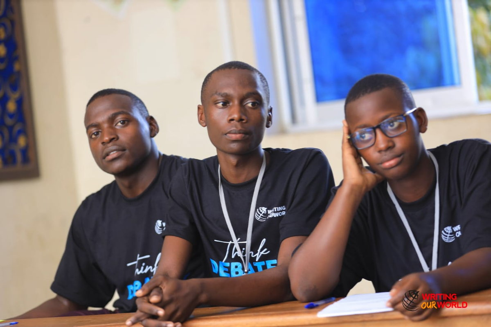

Sciences
For students pursuing medicine, engineering and the physical sciences. Taught with hands-on practicals in our laboratories.
- Mathematics
- Biology
- Chemistry
- Physics
- Agriculture

A broad, balanced curriculum at both O-Level and A-Level, taught by subject specialists in modern classrooms and laboratories.
Our Curriculum
Our curriculum follows the Uganda National Examinations Board (UNEB) syllabus while building the skills — critical thinking, creativity and communication — that universities and employers look for.
Advanced Level (S.5 – S.6)
Students choose a principal combination from the sciences or arts, together with compulsory subsidiary subjects.
For students pursuing medicine, engineering and the physical sciences. Taught with hands-on practicals in our laboratories.
For future lawyers, teachers, journalists and leaders — a rich programme that sharpens expression and analysis.
Supporting subjects taken alongside the principal combination, as required for UNEB certification.
Ordinary Level (S.1 – S.4)
Every student studies the core subjects and then chooses options that match their interests and career ambitions.
Science
Languages & Humanities
Practical & Business
Wellness
Choose Your Path
Applications are open for both O-Level and A-Level. Our team will help you choose the right combination for your goals.